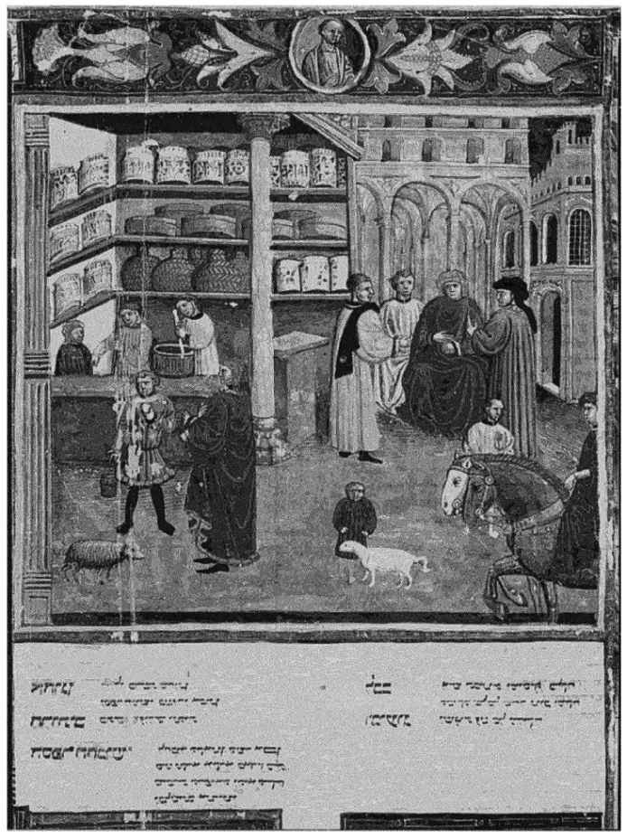
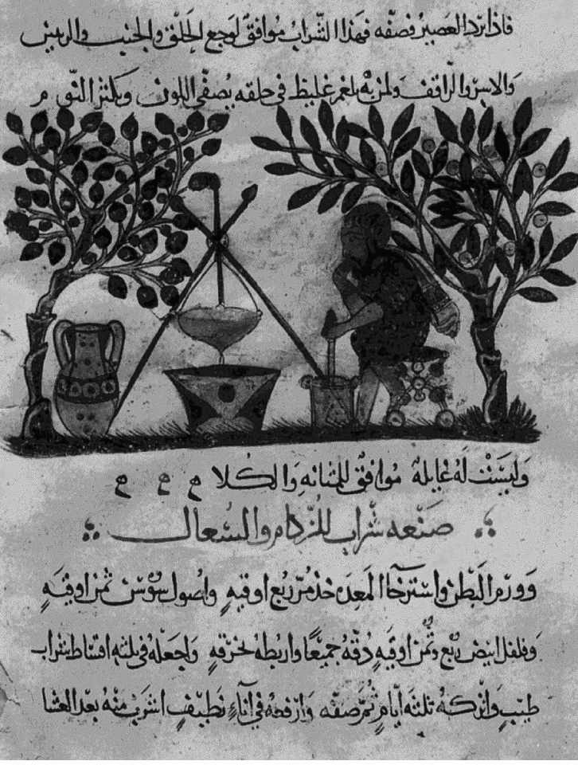

哈里发曼苏尔选择巴格达作为阿拔斯王朝的首都所在地，他预见到了这一选择的辉煌前景：
这个东濒底格里斯河、西临幼发拉底河的岛屿，是一个世界性的市场。溯底格里斯河而上的所有船只……都将在这里停泊；顺底格里斯河而下、沿幼发拉底河运来的货物，也将在这里停卸。这里将是山区、伊斯法罕和霍拉桑诸地区居民的交通要道。感谢安拉，为我保留了这块地方，并使在我之前来过这里的人们忽略了它。真主啊，我要在这里建筑城市，并终生居住在这里，我的子孙也将居住此地。无疑，它将成为世界上最繁荣的城市。[1]
曼苏尔的期望很快得到全面实现。一个世纪内，巴格达的人口约达100万。城市的中心是一座直径约两英里的城堡，里边有哈里发的宫廷、官员们的官邸和禁卫军的营房。城堡外围建立了巨大的商业中心，由富饶的两河流域地区提供充裕的产品。主要作物有小麦、大麦、稻米、椰枣和橄榄。各行省还提供了丰富的金属资源，如来自兴都库什山脉的白银，来自努比亚和苏丹的黄金，来自伊斯法罕的铜以及来自波斯、中亚和西西里岛的铁。帝国境内的许多地方都蕴藏着宝石，波斯湾水域还盛产珍珠。工业也很繁荣，就从事生产的人数和产值而言，纺织业最为重要。从中国战俘身上学到的造纸术，迅速传遍伊斯兰教世界，并于900年传入西班牙。
如此繁荣的经济，遍布辽阔的阿拔斯帝国，大大促进了地区间的贸易。如前章所述，穆斯林商人或走陆路经过中亚，或从水路同印度、锡兰、东南亚和中国通商。他们还同非洲进行广泛的贸易，由此获得黄金、象牙、乌木和奴隶。在斯堪的纳维亚半岛上发现的大批铸于7世纪至11世纪的穆斯林硬币，证实了穆斯林商人同北方国家的贸易。如此广泛的贸易交流，促进了银行业的高速发展，结果各主要城市都设有分行，在巴格达开的支票，可以在摩洛哥兑现。
有了坚实的经济基础，阿拔斯王朝的哈里发们便在其奢侈豪华的宫殿里纵情享受。《一千零一夜》描写了最著名的哈里发哈伦·赖世德（786—809年在位）。他是一个有文化素养的统治者，身边簇拥着一批诗人、乐师、歌手、舞女、学者和才子。室内常见的游戏是象棋、骰子和十五子棋；室外的运动有打猎、鹰猎、放鹰、马球、射箭、击剑、掷标枪和骑马比赛等。哈伦与查理曼处于同一时代，但他们各自的首都——巴格达和艾克斯拉沙佩勒——简直无法相比，如同今天的巴格达和巴黎无法相比一样，不过是在相反的意义上。
阿拔斯王朝不仅以富裕和豪华著称，而且以一段时期内在宗教事务上比较宽容著称于世，很明显，这种宽容在当时的西方是绝对没有的。伊斯兰教教法在一定程度上可用来说明这一点。这一神圣法律承认，基督教徒和犹太教徒同穆斯林一样，都属于“有经人”。两者都有一部圣典，即成文的启示书。他们的信仰被认为是真实的，不过还不完整，因为穆罕默德已取代了摩西和耶稣基督。因此，伊斯兰教宽容基督教徒和犹太教徒。它允许他们坚持自己的信仰，只是予以某些限制和处罚。
图79 位于耶路撒冷的石制穹顶。它是早期伊斯兰教建筑（但不是清真寺）的范例，始建于公元7世纪第一轮阿拉伯扩张浪潮掀起时。它建在一块岩石之上，穆斯林认为那块岩石是穆罕默德的升天之处，而犹太人认为它是亚伯拉罕准备祭献以撒之处。
阿拔斯王朝还以科学领域的成就享有盛名，不过，这方面的趋势是保存和发展原有的东西，而不是创造新的东西。最伟大的科学家比鲁尼（973—1048年）曾说过：“我们应限于从事古人所从事的事业，完善可以完善的东西。”[2]然而，帝国的庞大规模，它同欧亚大陆各地区的实际联系，它从几大文明中心获得的极为丰富的遗产，都有助于伊斯兰教科学取得实实在在的成就。例如，以“智慧之城”自誉的巴格达，就拥有一批翻译家、一个图书馆、一座天文台和一所学校。那里的学者们除了翻译和研究波斯和印度的科学论文外，还翻译和研究希腊科学家和哲学家的著作。
在天文学方面，穆斯林一般接受了前希腊人的基本原则，理论上没有什么重大突破。但是，他们不间断地延续了古人的天文观察，从而使文艺复兴时期的天文学家们获得了约900年的记录，为他们的重大发现提供了依据。
与在天文学方面一样，穆斯林在地理学方面也没取得什么理论上的成就，但是，庞大的帝国疆土、广泛的贸易范围，使他们积累了有关欧亚大陆的系统、可靠的资料。例如，比鲁尼关于印度的名著，不仅描写了这个国家的地理特征，而且描写了印度人的社会制度、宗教信仰和科学成就。可以说，在这一点上，直到18世纪才有人能与他相媲美。穆斯林还绘制了航海图和地图。在这些图中，如当时的基督教制图者们以耶路撒冷为中心一样，穆斯林自然以麦加为中心。

图80 14世纪的手稿，表现的是阿维森纳和学者们。这一页取自阿维森纳著的《医典》，现存于博洛尼亚大学图书馆。
除自身原先的成就外，穆斯林还在翻译和传播古代著作方面做出了卓越贡献。伍麦叶王朝的哈里发们不信任任何非阿拉伯人，对他们的文明也不感兴趣。阿拔斯王朝的哈里发们则不同。他们曾得到基督教徒、犹太教徒和波斯琐罗亚斯德教徒的有力支持，因而度量也更为宽宏。“智慧之城”巴格达拥有一大批翻译家，其中著名的翻译家侯赛因·伊本·易司哈格（809—873年）就是一位基督教徒。他曾出访希腊语国家，收集手稿，同助手一起翻译了许多著作，其中包括希波克拉底、盖伦、欧几里得、托勒密、柏拉图和亚里士多德的作品。另一个伟大的翻译中心位于穆斯林西班牙的托莱多市。12、13世纪，这里的翻译家有犹太人、西班牙人和来自欧洲各地的外国学者。这一活动具有深远的意义，因为西欧人对希腊学问已缺乏直接的了解，甚至长期不知道它的存在。因此，穆斯林的学术成就在西欧准备重新开始自己的研究之前，起到了保存希腊著作的作用。
最后应该强调的是，两条基本纽带，即阿拉伯语和伊斯兰教，将哈里发统治下的不同民族联结在一起。阿拉伯语的传播，比阿拉伯人的征服效果更为显著。到11世纪时，阿拉伯语已代替古希腊语、拉丁语、科普特语和阿拉米语，在从摩洛哥到波斯的广大地区流行，并一直持续到今天。这一公用语言说明，虽然在这一地区，除了占优势的闪米特人外，还有苏丹黑人，除了占优势的穆斯林外，还有黎巴嫩基督徒和埃及科普特教徒，但他们之间却存在着一种彼此认同的情感。甚至在这片已永久阿拉伯化的辽阔地区之外，阿拉伯语对其他穆斯林民族的语言也产生了深远的影响。阿拉伯词汇在这些语言中，如希腊和拉丁词汇在英语中一样被普遍使用；其中有些语言（乌尔都语、马来语、斯瓦希里语和第一次世界大战前的土耳其语）都是用阿拉伯文字母拼写的。
伊斯兰教也是一条强有力的纽带，一条比基督教更有力得多的纽带，因为它不仅是一种宗教信仰，而且是一种社会和政治体系与一种普遍的生活方式。如同语言为阿拉伯世界打下基础一样，宗教信仰也为伊斯兰教文明提供了基础。众所周知，伊斯兰教文明在征服后的几个世纪中，逐渐发展成为一种带有基督教、犹太教、琐罗亚斯德教和阿拉伯宗教的成分，带有希腊——罗马、波斯——美索不达米亚的行政、文化和科学诸成分的综合体。因此，它不是早先各种文化的简单拼凑，而是代表全新文明的一种融合。它虽然来源不一，有多种组成部分，但却明显带有阿拉伯伊斯兰教的独特印记。
到目前为止，伊斯兰教依然是一股较重要的势力，是世界的第二大宗教，拥有近12亿信徒。而基督教有20多亿信徒。穆斯林（照字义即安拉意志的“顺从者”）分布在从非洲的大西洋海岸越过北非、穿过中东和南亚、直达印度尼西亚的辽阔地域。因此，许多种族群体占据了虔诚徒众的阵营；阿拉伯人，即伊斯兰教的创始人，现在成了伊斯兰教中的少数派。

图81 迪奥斯科里斯手稿中的一页：咳嗽药的配方和一位正在配制此药的医生。阿拉伯人对医学界的贡献是相当大的；大批药品由意大利船只运往欧洲。